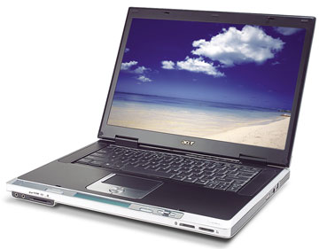
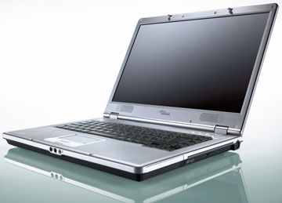
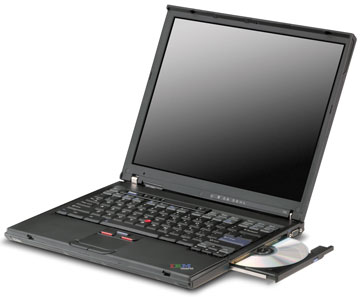
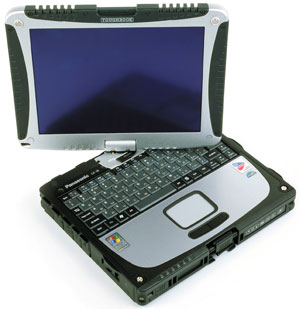

Андрей Ездаков
Темпы роста числа мобильных ПК продолжают радовать их производителей. Вполне вероятно, что в ближайшие год-полтора их общее количество вплотную приблизится к количеству традиционных настольных компьютеров. Мобильность вычислений, ставшая девизом некоторых компаний, активно работающих в этом сегменте ИТ-рынка, действительно входит в "плоть и кровь" современных пользователей.
Ситуация в России развивается по тому же сценарию, что и в развитых странах, только с небольшой задержкой по времени. Производители адекватно реагируют на высокий спрос, так что отечественному пользователю теперь остается только выбирать, какой ноутбук приобрести. В прошлом номере журнала мы рассмотрели модельные ряды мобильных ПК от российских компаний, нынешняя статья посвящена ноутбукам мировых производителей.
Гранды мирового ИТ-рынка широко представляют свою мобильную продукцию в России; среди них и компании Acer, Fujitsu Siemens, IBM и Panasonic, о продуктах которых и пойдет речь в нашем обзоре. Среди предложений есть и стильные ноутбуки для тех, для кого это устройство по-прежнему служит мерилом престижа и средством самоутверждения, и "рабочие лошадки" за разумную цену для массового использования в офисах, и специально защищенные модели, и многое другое. Пользователю нужно только определиться, для чего ему нужен в первую очередь мобильный ПК и какую сумму он готов за него заплатить.
Мобильные ПК Acer
Имея тайваньское происхождение и штаб-квартиру в Тайбее, компания Acer (http://www.acer.com) стала очень популярной в Западной Европе, где, по данным Gartner Group, на протяжении года занимала первое место по поставкам ноутбуков. Причины столь высокой популярности ноутбуков Acer, по мнению сотрудников компании, связаны с принятой ею современной моделью бизнеса и оптимальной структурой издержек, которая позволяет своевременно делать инвестиции в разработку инновационных продуктов, равно как и выводить на рынок модели начального уровня по весьма агрессивным ценам.
Что касается российского рынка, то здесь объемы продаж ноутбуков Acer в 2003 г. по сравнению с 2002 г. выросли на 171%, причем 34% продаж составили модели на базе Intel Centrino. Наибольший объем продаж - около 40% в штучном исчислении пришелся на ноутбуки в ценовом диапазоне до 1500 долл. Доля ноутбуков с розничной ценой свыше 2000 долл. составила примерно 30%. Россия остается чрезвычайно перспективным рынком для Acer, и, как полагают в компании, результаты текущего года могут заметно превзойти показатели предыдущего, поскольку уже в I квартале 2004 г. Acer продала в нашей стране больше мобильных ПК, чем за весь прошлый год.
Классификация ноутбуков Acer имеет перекрестную систему. С одной стороны, практически все ноутбуки компании относятся к одной из двух основных линеек: TravelMate - устройства для бизнеса и Aspire - мобильные ПК для дома и отдыха. Сейчас линейка TravelMate насчитывает 11 серий, каждая из которых представлена несколькими моделями. В линейку Aspire входят семь серий. Особняком стоит линейка ноутбуков Ferrari, представленная пока одной моделью - Ferrari 3200. Модели Aspire выглядят более стильно, а TravelMate отличаются строгим дизайном, четко рассчитанным соотношением цена (или общая стоимость владения)/производительность. Впрочем, деление на линейки носит отчасти условный характер, поскольку все ноутбуки можно использовать для решения бизнес-задач. В линейке TravelMate также штатно используются репликаторы портов, единый образ ОС и другие характеристики, более востребованные корпоративным рынком.
|  | Мобильный ПК компании Acer.
|
Ноутбуки Acer также делятся на классы по функциональности, в зависимости от того, на какой сегмент потребителей они ориентированы и какие качества наиболее важны для этих потребителей. Класс "замена офисных ПК" объединяет серии TravelMate 2200 и TravelMate 2700. К классу "мобильные рабочие станции" относится целый ряд серий с разной функциональностью, производительностью и ценой, но сохраняющих при этом набор идентичных характеристик, таких, как масса до 3 кг (даже у моделей с 15-дюйм дисплеем), до 5 ч автономной работы, поддержка протоколов беспроводной связи. Еще один класс ноутбуков, "легкие и компактные", объединяет модели массой от 1,7 кг, предназначенные для тех, кто часто путешествует.
Устройства серии TravelMate 2200 оптимально подходят для работы с современными деловыми приложениями. Цена на эти модели находится на уровне "системный блок + ЖК-монитор", при этом преимущества оснащения рабочих мест сотрудников ноутбуками очевидны: эргономичный современный вид и возможность продолжения работы за пределами офиса. В этом случае компактность ноутбука не имеет первоочередного значения.
В ноутбуках TravelMate серии 2200 используются процессоры Intel Celeron, они имеют 15-дюйм XGA-дисплеи с разрешением 1024x768. Модели комплектуются памятью объемом 256 или 512 Мбайт, жесткими дисками от 30 Гбайт и встроенными оптическими приводами DVD/CD-RW. В этих ноутбуках реализован большой набор портов для подключения дополнительных устройств, в том числе четыре порта USB 2.0 и ИК-порт. Некоторые модели серии TravelMate 2200 комплектуются модулями беспроводного доступа. В этой серии, в соответствии с возможностями современного российского корпоративного пользователя, всегда есть модели, которые можно приобрести по цене до 1000 долл.
Недавно компания объявила о начале поставок двух новых серий ноутбуков на базе технологии Intel Centrino - TravelMate 4000 и 4500. Несмотря на внешнее сходство (обе серии имеют одинаковый дизайн), новые мобильные ПК относятся к разным сегментам в продуктовой линейке Acer. TravelMate 4000 - это ноутбуки эконом-класса, а полнофункциональные TravelMate 4500 относятся к бизнес-классу. В Россию поставляются модели TravelMate 4000 с 15-дюйм ХGA-дисплеем стандартного формата 3:4 и TravelMate 4500 с широкоформатным 15,4-дюйм WXGA-дисплеем формата 16:10.
Ноутбуки TravelMate 4000 оснащены процессором Intel Pentium M 715 с тактовой частотой 1,5 ГГц и 2 Мбайт кэш-памяти 2-го уровня и с поддержкой технологии Intel SpeedStep. Они комплектуются жестким диском емкостью 40 Гбайт и оперативной памятью от 256 до 2048 Мбайт. С установленным оптическим накопителем такой ноутбук имеет массу 2,91 кг. Широкоформатные мобильные ПК TravelMate 4500 на базе процессоров Intel Pentium M 715 с тактовой частотой 1,5 ГГц и 2 Мбайт кэш-памяти 2-го уровня имеют объем ОЗУ не менее 512 Мбайт и демонстрируют хорошие графические возможности благодаря использованию в них видеоадаптеров ATI Mobility Radeon 9700 с 64 Мбайт собственной видеопамяти.
Мобильные ПК обеих серий оснащены широким набором портов ввода-вывода, включая S-Video, три порта USB 2.0, один IEEE 1394 и ИК-порт. TravelMate серии 4500 имеет также разъем для подключения репликатора портов. Коммуникационные устройства обеих серий включают факс-модем 56К ITU V.92, встроенные сетевой адаптер 10/100 Мбит/с и адаптер беспроводной сети Intel PRO/Wireless 2100 b/g. Качество беспроводного соединения обеспечивается фирменной технологией Acer Signal Up, которая повышает реальную скорость передачи данных. Отдельного упоминания заслуживает новый оригинальный дизайн этих ноутбуков, получивший название Folio (что можно перевести как "сложенный вдвое лист бумаги").
В новых моделях серии TravelMate 8000 - 8005LMi и 8006LMi используются процессоры Intel Pentium M 745 и Intel Pentium M 755 соответственно. Эти ноутбуки не случайно относятся к классу мобильных рабочих станций, поскольку время их автономной работы со стандартной батареей достигает 5 ч, а с дополнительной - 8 ч. Видеоподсистема TravelMate 8005LMi и 8006LMi реализована на базе графического контроллера ATI Mobility Radeon 9700 и использует 128 Мбайт собственной видеопамяти, благодаря чему дисплей с диагональю 15 дюймов поддерживает разрешение 1400x1050. Для улучшения качества изображения при работе с презентационным оборудованием в ноутбуке используется цифровой интерфейс DVI-D.
Мобильные ПК TravelMate 8005LMi и TravelMate 8006LMi оснащены отсеком AcerMedia Bay для накопителей, заменяемых в горячем режиме, а также устройством считывания смарт-карт для контроля доступа к данным. Физическая стойкость к внешним повреждениям обеспечивается за счет технологии дополнительной защиты жесткого диска от ударов DASP (Disk Anti Shock Protection), а также корпуса, изготовленного из высокопрочного пластика и алюминия. В новых моделях также реализована технология Signal Up.
В линейку Aspire входит, в частности, серия мобильных мультимедийных центров Aspire 2020. Модель Aspire 2026WLMi, самый мощный ноутбук в этом семействе, построена на базе процессоров Intel Pentium M 755. Графическая подсистема ноутбука включает контроллер ATI Radeon 9700 со 128 Мбайт собственной видеопамяти и широкоформатный дисплей с диагональю 15,4 дюйма и разрешением до 1280x800. В Aspire 2026WLMi реализована технология Aspire Arcade, которая повышает качество воспроизведения музыки и видео, а также дает пользователям новые возможности управления мобильным ПК.
В стандартной конфигурации Aspire 2026WLMi поставляются с дисководом DVD-RW, поддерживающим большинство современных форматов записи, в том числе DVD+RW, DVD-RW и DVD-RAM. Конструкция оптического дисковода предполагает загрузку диска без выдвижения подставки, что придает ноутбуку и его компонентам устойчивость к механическим повреждениям. Элементы корпуса выполнены из анодированного алюминия.
На все ноутбуки Acer, поставляемые в Россию и страны СНГ, распространяется двухлетняя гарантия. Для обеспечения гарантийного и послегарантийного сервиса на территории нашей страны существует сеть из более чем 60 авторизованных сервисных центров. Послегарантийное обслуживание и продажа комплектующих осуществляется по рекомендованным ценам сертифицированными авторизованными сервис-партнерами компании. На сайте компании можно получить руководства пользователей к любому поставляемому в Россию продукту, а также задать вопросы техническим специалистам Acer. Кроме того, летом нынешнего года московское представительство Acer заключило соглашение с компанией R-Style Service, по условиям которого последняя получает статус авторизованного сервисного провайдера по всем видам продукции Acer на территории РФ и стран СНГ. Теперь компания R-Style Service уполномочена авторизовывать региональные сервисные центры (по согласованию с представительством Acer).
Ноутбуки Fujitsu Siemens
Мобильные вычисления - одно из приоритетных направлений работы компании Fujitsu Siemens Computers (http://www.fujitsu-siemens.com), совместного предприятия японской компании Fujitsu Limited и немецкого концерна Siemens AG. По мнению руководства компании, развитие этого направления производственной и торговой деятельности соответствует требованиям сегодняшнего дня, в котором быстро растущее сообщество мобильных пользователей должно практически в любой момент иметь доступ к Интернет-услугам и приложениям вне зависимости от местонахождения.
Поэтому компания предлагает широкий ассортимент мобильных решений, начиная от карманных ПК и заканчивая мощными мобильными рабочими станциями. Критериями разделения мобильных ПК Fujitsu Siemens на категории служат, с одной стороны, портативность устройства (компания выделяет две градации: портативные и ультрапортативные ноутбуки), с другой стороны - ориентация на группы пользователей (домашние и корпоративные).
|  | Мобильный ПК компании Fujitsu Siemens.
|
Классический представитель класса портативных корпоративных ноутбуков - устройство Celsius H210. Это высокопроизводительная рабочая станция, построенная на базе технологии Intel Centrino (набор микросхем Intel 855 GME). В ней используются процессоры Intel Mobile Pentium M 735/745/755 с тактовой частотой от 1,7 до 2 ГГц и объемом кэш-памяти 2-го уровня 2 Мбайт. Объем ОЗУ этого устройства (типа DDR333 SDRAM) может достигать 2 Гбайт, а размер дискового пространства - 160 Гбайт (в случае установки двух дисков по 80 Гбайт). Масса ноутбука - около 3,2 кг.
Эта модель ориентирована на профессиональных пользователей, которым необходима мобильная рабочая станция для работы со сложными приложениями, требовательными к аппаратным ресурсам. Celsius H210 позволяет эффективно работать с системами автоматизированного проектирования и конструирования; пакетами для дизайна механических устройств, природных ландшафтов, интерьеров; программами финансового анализа и прогнозирования; инструментами для разработки компонентов виртуальной реальности и визуализации сложных динамических объектов.
Благодаря использованию в Celsius H210 высокопроизводительной видеоплаты ATI Mobility FireGL T2e (со 128 Мбайт собственной видеопамяти) на 15-дюйм экране ноутбука поддерживается разрешение UXGA (1600x1200). Широкие возможности функционального расширения и коммуникаций обеспечиваются четырьмя портами USB 2.0, адаптером Bluetooth, модулем беспроводного подключения к ЛВС по стандарту IEEE 802.11b/g, интегрированным сетевым адаптером с настраиваемой пропускной способностью 10/100/1000 Мбит/с, интерфейсом FireWire (IEEE 1394). Имеется также дополнительный слот для подключения флэш-карт и ряд других устройств.
Ноутбук Celsius H210 оснащается приводом для компакт-дисков типа Combo или DVD+-R/+-RW; опционально может устанавливаться порт-репликатор. На ноутбуке предустановлена ОС Microsoft Windows XP Professional, возможна его сертификация для работы под Linux. Срок гарантийного обслуживания этой мобильной рабочей станции составляет 3 года.
Принадлежность мобильного ПК к категории "ультрапортативных" определяется главным образом его малыми массой и размерами. Такие устройства обычно выполняются без модульного отсека. Но модель Lifebook P7010 лишена этого недостатка, она может быть оснащена Combo-приводом, мультистандартным пишущим DVD-устройством или дополнительным аккумулятором. С дополнительной батареей ноутбук может работать в автономном режиме в течение 10,5 ч. Имея массу всего 1,3 кг и размеры 19,9x26,1 см, он легко поместится в небольшой сумке. Утонченный дизайн этой модели делает ее особенно привлекательной для современных деловых женщин.
Ноутбук базируется на наборе микросхем Intel 855GME и использует процессор Intel Pentium M ULV 718 с тактовой частотой 1,1 ГГц и объемом кэш-памяти 2-го уровня 1 Мбайт. Максимальный объем ОЗУ типа DDR SDRAM (PC333) у Lifebook P7010 составляет 1 Гбайт. Для предотвращения несанкционированного доступа Fujitsu Siemens предлагает защищенные паролем жесткие диски, BIOS и ОС. Для сохранности самого устройства на Lifebook P7010 также можно установить замок Kensington.
В качестве внешних интерфейсов в ноутбуке используются разъем PC Card Type II, слоты для флэш-карт SD/MS и CF, два порта USB 2.0 и порт FireWire. Коммуникационное оборудование представлено встроенным адаптером RealTek 8101 с пропускной способностью 10/100 Мбит/с, V.90 MDC-модемом 56K, отвечающим различным стандартам, адаптером беспроводной сети Intel PRO/Wireless 2200BG LAN (802.11b/g).
Широкоформатный 10,6-дюйм дисплей мобильного ПК поддерживает WSXGA-разрешение 1280x768 благодаря интегрированному видеоадаптеру с 64 Мбайт выделенной видеопамяти. Емкость жесткого диска составляет 60-80 Гбайт. В набор предустановленного ПО для Lifebook P7010 входит ОС Microsoft Windows XP Professional, Adobe Acrobat Reader 6, Norton Ghost 2003, Nero 6, Odyssey Client, InterVideo WinDVD 5, а также драйверы и утилиты, включая антивирусную программу F-Secure. Гарантийный срок для этого устройства - 3 года.
Из домашних ноутбуков серии Amilo часть (например, модель M1420) построены на базе наборов микросхем Intel 855GME+ICH4 (технология Intel Centrino). В них устанавливается процессор Intel Pentium M с тактовой частотой от 1,5 до 1,9 ГГц. Широкоформатный 15,4-дюйм экран Amilo М1420 и мощный графический контроллер ATI Mobility Radeon 9600 Pro со 128 Мбайт собственной видеопамяти позволяют этому мобильному ПК поддерживать разрешение до 1280x800.
Объем ОЗУ типа DDR SDRAM, DDR333 SO-DIMM в этом устройстве равен 256 Мбайт и может быть увеличен до 1 Гбайт, емкость жесткого диска составляет 40-80 Гбайт в зависимости от варианта комплектации. Ноутбук также оснащается оптическим приводом DVD+R/+RW. Для чтения флэш-карт в нем предусмотрен порт "3 в 1" SD/MS/MMC. Внешний интерфейс стандарта IEEE 1394 и ряд других, а также три USB-порта, встроенный модем и интегрированный сетевой адаптер расширяют функциональные возможности ноутбука и обеспечивают коммуникации. Масса модели Amilo М1420 - 3 кг.
В комплект поставки Amilo M1420 входит предустановленная Microsoft Windows XP Home Edition с Work Suite 2004 и пакет прикладных программ: Adobe Photoshop Elements 2.0, Adobe Photoshop Album 2.0, Win DVD 5, Nero CD-Maker Version 6, Odysee WLAN Client Manager. Срок гарантийного обслуживания этого мобильного компьютера составляет 2 года.
Мобильные компьютеры IBM
Известный производитель компьютерной техники корпорация IBM (http://www.ibm.com) уделяет большое внимание формированию и развитию продуктовой линейки своих мобильных компьютеров, название которой - ThinkPad - хорошо знакомо большинству пользователей. Концепцию развития этого направления корпорация определяет как стремление предоставить потребителям самые широкие возможности при выборе ноутбука - как с точки зрения доступной функциональности, так и с позиции затрат на его приобретение и последующее обслуживание.
Как следствие, модельный ряд мобильных ПК IBM представлен сразу четырьмя семействами. Это и престижные модели ThinkPad T Series с большим временем автономной работы, и базирующиеся исключительно на технологии Intel Centrino ультралегкие портативные ноутбуки семейства ThinkPad X Series, и "рабочие лошадки" для корпоративных клиентов ThinkPad R Series, и наконец, мобильные компьютеры категории "замены настольного ПК" - семейство ThinkPad G Series.
|  | Ноутбук IBM ThinkPad.
|
Устройства семейства ThinkPad T Series имеют небольшую толщину, малую массу и, благодаря технологии Intel Centrino, могут работать в автономном режиме до 9,5 ч (при одновременном использовании специальной опциональной батареи высокой емкости ThinkPad High Capacity Battery и дополнительной батареи ThinkPad Ultrabay Slim Li Polymer). Эти ноутбуки в первую очередь предназначены для тех пользователей, которые проводят в деловых поездках многие часы и далеко не всегда имеют возможность подключиться к сети питания.
Для удобства таких пользователей и повышения надежности работы устройства в моделях семейства используется специальная технология активной защиты жестких дисков при ударах и падениях ноутбука, разработанная специалистами корпорации, - IBM Active Protection System. Специальная микросхема, установленная на системной плате, реагирует на ускорение. При превышении порогового значения она подает сигнал временной блокировки головки чтения/записи, что предотвращает повреждение жесткого диска. Через некоторое время после возвращения ноутбука в статичное положение блокировка снимается и система продолжает работу.
Среди моделей семейства ThinkPad T Series можно отметить ноутбуки ThinkPad T41p/T42/T42p. Первые две оснащаются 14-дюйм экраном на базе активной TFT-матрицы с разрешением до 1400x1050, последняя же обеспечивает на 15-дюйм мониторе максимальное разрешение до 1600x1200. В этих мобильных ПК устанавливаются процессоры Intel Pentium M с тактовой частотой 1,5-1,7 ГГц и объемом кэш-памяти 2-го уровня 1 Мбайт или Intel Pentium M 735/745/755 с кэш-памятью 2-го уровня 2 Мбайт и поддержкой технологии Intel SpeedStep.
Некоторые варианты ThinkPad T42p для увеличения графического разрешения комплектуются видеосистемой на базе платы ATI Mobility FireGL T2 с поддержкой интерфейса OpenGL и средствами FlexView.
Новые устройства семейства имеют толщину 2,5-3 см и массу от 2,2 до 2,4 кг. Они оснащены коммуникационными устройствами как беспроводных стандартов IEEE 802.11a/b/g или Bluetooth, так и для обычных подключений через проводные каналы. На модель ThinkPad T42/T42p устанавливается специальное ПО IBM Access Connection 3.0, которое сохраняет параметры сетевого подключения и упрощает организацию связи ноутбуков по различным физическим каналам. Ноутбуки семейства имеют несколько свободных слотов для расширения функциональных возможностей и встроенный оптический привод формата Combo или 8X Max DVD-ROM.
Помимо предустановленной ОС Microsoft Windows XP Professional в комплект поставки мобильных ПК семейства ThinkPad T Series входят офисные программные пакеты, приложения поддержки средств мультимедиа, ПО для обработки изображений и антивирусные программы. Срок гарантийного обслуживания этих устройств составляет 3 года, гарантия на батарею - 1 год.
Сверхтонкие и ультралегкие модели семейства ThinkPad X Series предназначены для тех, кто проводит в пути много времени и предпочитает перемещаться налегке. Эти устройства массой от 1,2 до 1,7 кг также оснащены технологией защиты жестких дисков IBM Active Protection System. Специальная дополнительная батарея в сочетании с емкой основной позволяет довести время автономной работы ноутбуков до 10,1 ч.
Обе новые модели этого семейства, ThinkPad X31/40, построены на технологии Intel Centrino и потому базово оснащаются возможностями организации беспроводного доступа к сетям по стандарту IEEE 802.11a/b/g. Кроме того, некоторые варианты этих устройств комплектуются модемами и сетевыми платами стандарта Ethernet. Графический режим с разрешением до 1024x768 реализуется на 12-дюйм экране ноутбуков благодаря видеоплате ATI Mobility Radeon c 16 Мбайт собственной памяти в ThinkPad X31 или через интегрированную подсистему Intel Extreme Graphics 2 в ThinkPad X40.
В модели ThinkPad X31 используется процессор Intel Pentium M с тактовой частотой 1,5-1,7 ГГц и объемом кэш-памяти 2-го уровня 1 Мбайт, объем ОЗУ в ней составляет 256-512 Мбайт и может быть увеличен до 2 Гбайт, емкость жесткого диска - 20-40 Гбайт. Масса этого ноутбука менее 1,7 кг. В ThinkPad X40 установлен процессор Low Voltage Intel Pentium M с тактовой частотой 1,2 ГГц и объемом кэш-памяти 2-го уровня 1 Мбайт. Объем ОЗУ этого устройства лежит в интервале от 256 до 1536 Мбайт в зависимости от заказанного варианта, емкость жесткого диска равна 40 Гбайт. Масса ThinkPad X40 - всего немногим более 1,2 кг.
Обе модели, помимо коммуникационных портов, для расширения функциональных возможностей оснащаются несколькими свободными слотами, двумя USB-портами, ИК-портом и рядом других. Комплектность ПО, предустанавливаемого на мобильные ПК семейства ThinkPad X, такая же, как и у предыдущего семейства. Срок гарантийного обслуживания этих ноутбуков составляет 3 года, гарантия на батарею - 1 год.
Семейство корпоративных продуктов корпорации называется ThinkPad R Series; это, пожалуй, самое многочисленное семейство ноутбуков IBM. Они обычно имеют массу от 2,5 до 3 кг и 14- либо 15-дюйм экран с активной TFT-матрицей (максимальное разрешение до 1600x1200). Новые модели этого семейства тоже в основном построены на технологии Intel Centrino и имеют все ее преимущества - длительный срок автономной работы, встроенные беспроводные коммуникационные устройства и т. п.
В ноутбуках ThinkPad R40/R50/R50p/R51/R51p используются процессоры Intel Pentium M с тактовой частотой 1,3-1,7 ГГц и объемом кэш-памяти 2-го уровня 1 Мбайт или Intel Pentium M 735/745/755 с кэш-памятью 2-го уровня 2 Мбайт (есть вариант с процессором Intel Pentium 4-M или Intel Celeron), они имеют ОЗУ от 256 Мбайт до 2 Гбайт и жесткие диски емкостью до 120 Гбайт. В них установлены приводы для компакт-дисков, слоты расширения PC Card Type II или Type III, два USB-порта, ИК-порт и ряд других. Помимо беспроводного модуля мобильные ПК семейства ThinkPad R Series штатно оснащены модемом и сетевым адаптером стандарта 10/100 Ethernet.
На ноутбуки этого семейства предустанавливается ОС Microsoft Windows XP Professional или Windows XP Home Edition. В комплект их поставки также входят офисные программные пакеты, приложения поддержки средств мультимедиа, ПО для обработки изображений и ряд других программ. Срок гарантийного обслуживания этих устройств составляет от 1 до 3 лет, гарантия на батарею - 1 год.
Удачной альтернативой настольному ПК служат ноутбуки семейства ThinkPad G Series, например, ThinkPad G40. Эти мобильные компьютеры, базирующиеся на процессорах Intel Pentium 4 с частотой до 3 ГГц и объемом кэш-памяти 2-го уровня 512 Кбайт или Intel Celeron с частотой 2,4 ГГц и объемом кэш-памяти 2-го уровня 128 Кбайт, подходят как для офисных работ, так и для домашнего использования. На них устанавливается от 256 Мбайт до 1 Гбайт ОЗУ типа PC2100 DDR SDRAM, жесткий диск емкостью до 80 Гбайт и оптический накопитель типа CD, Combo или 8X Max DVD. Графическая подсистема этих устройств базируется на интегрированном адаптере Integrated Extreme Graphics с 32 или 64 Мбайт выделенной памяти, который поддерживает на 14- или 15-дюйм экране разрешение 1024x768.
Расширение функциональных возможностей мобильных ПК семейства ThinkPad G Series и их связь с локальными и глобальными сетями осуществляется через набор портов и слотов, в числе которых четыре USB-порта, модемный выход, коннектор стандарта 10/100 Ethernet, слот типа PC Card Type II или Type III и другие. Помимо Microsoft Windows XP Professional или Windows XP Home Edition, на ноутбуки семейства ThinkPad G Series предустанавливаются пакеты поддержки средств мультимедиа, ПО для обработки изображений и антивирусные программы. Срок гарантийного обслуживания этих устройств 1 год, на столько же дается гарантия на батарею.
Ноутбуки Panasonic
Известная многопрофильная компания Matsushita Electric выпускает широкий ассортимент электронной техники под торговой маркой Panasonic (http://www.panasonic.com). Среди мобильных ПК этой марки выделяется семейство устройств Panasonic Toughbook (от Tough - "стойкий"), модели которого относятся к категории "защищенных ноутбуков" (речь идет о повышенной устойчивости к механическим воздействиям и проникновению в эти устройства жидкостей или твердых инородных тел). Несмотря на относительно высокую стоимость, спрос на подобные устройства растет во всем мире, хотя и не столь быстрыми темпами, как на мобильные ПК в целом. Для пользователей таких устройств важна надежность работы ноутбука вне зависимости от условий окружающей среды или в длительных поездках, где могут случаться удары и падения ноутбука с некоторой высоты. Именно на таких клиентов и рассчитана продукция семейства Panasonic Toughbook.
|  | Защищенный ноутбук семейства Panasonic Toughbook.
|
Сейчас российские дистрибьюторы техники Panasonic предлагают несколько мобильных ПК этого семейства. Модель Panasonic Toughbook CF29 представляет собой устройство массой 3,6 кг с высокой степенью защиты. Его можно ронять почти с метровой высоты, он закрыт от проникновения воды и пыли, защищен от вибрации и ударов. При этом ноутбук имеет большой для этой категории 13,3-дюйм экран, поддерживающий разрешение до 1024x768, высокая яркость которого поддерживается специальной технологией Touchscreen.
Ноутбук Panasonic Toughbook CF29 базируется на энергосберегающем процессоре Intel Mobile Pentium M с тактовой частотой 1,2 ГГц. Объем его ОЗУ составляет 256 Мбайт и может быть увеличен до 768 Мбайт, емкость жесткого диска, защищенного специальным гелиевым контейнером, - 40 Гбайт. Для расширения функциональных возможностей устройства и коммуникаций оно оснащено встроенным модемом со скоростью передачи до 56 Кбит/с, сетевой картой стандарта Fast Ethernet 10/100 Мбит/с, одним или двумя слотами для загрузки PC Card (PCMCIA) и USB-портом. На этот мобильный ПК предустанавливается ОС Microsoft Windows XP Professional.
Следующая модель семейства, Panasonic Toughbook CF18, представляет собой устройство-трансформер, которое можно использовать и как планшетный ПК, и как стандартный полноценный мобильный ПК. Это легкий (масса 2 кг), но тем не менее достаточно защищенный от неблагоприятных воздействий ноутбук. Он построен на основе процессора Mobile Intel Pentium III с низким энергопотреблением с тактовой частотой 900 МГц.
На экране Toughbook CF18 диагональю 10,4 дюйма поддерживается разрешение до 1024x768. Объем его оперативной памяти может составлять от 256 до 768 Мбайт, а емкость защищенного жесткого диска - 40 Гбайт. Аналогично предыдущей модели, этот ноутбук оснащен рядом слотов и портов для обеспечения коммуникаций и расширения функциональных возможностей. Помимо интегрированных модема и сетевого адаптера эта модель оснащается двумя USB-портами и двумя слотами PCMCIA. На него также предустанавливается ОС Microsoft Windows XP Professional.
Третья модель, Panasonic Toughbook W2 массой всего 1,2 кг, относится к разряду ультрапортативных защищенных мобильных ПК. Ноутбук построен на базе технологии Intel Centrino, что увеличивает продолжительность его работы в автономном режиме и упрощает коммуникации. В Panasonic Toughbook W2 устанавливается процессор Intel Pentium M с тактовой частотой 900 МГц и ОЗУ объемом 256-512 Мбайт и жесткий диск емкостью 40 Гбайт. Размер экрана ноутбука равен 12,1 дюйма.
Коммуникационные возможности этого устройства обеспечиваются за счет интегрированных модема, сетевого адаптера (10/100 Ethernet) и адаптера беспроводной сети (Wireless LAN 802.11b). Функциональные расширения поддерживаются двумя USB-портами и слотом PCMCIA. Для работы с компакт-дисками в ноутбуке предусмотрен привод типа Combo. На Panasonic Toughbook W2 предустанавливается ОС Microsoft Windows XP Professional.
Защищенные мобильные ПК Panasonic Toughbook компании Matsushita Electric обеспечивают пользователям высокую производительность и удобство при работе в полевых условиях. Срок их гарантийного обслуживания составляет от 1 до 3 лет.